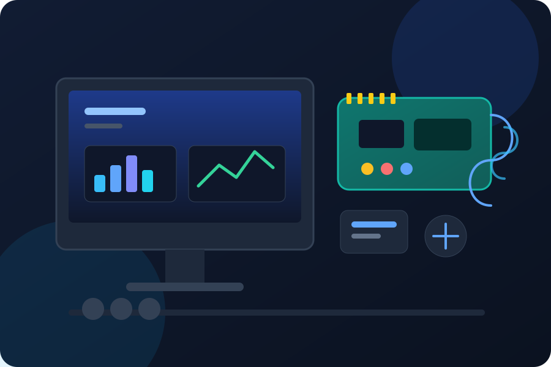
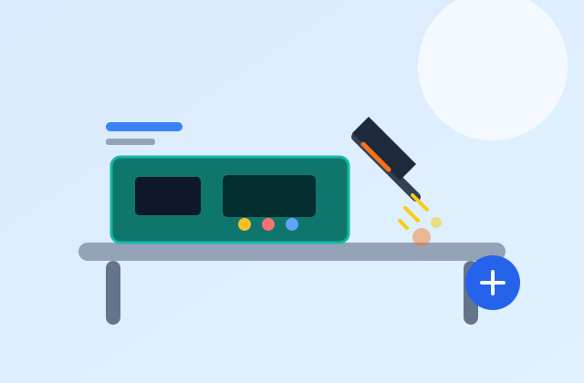
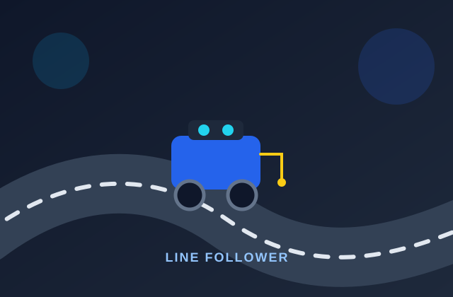
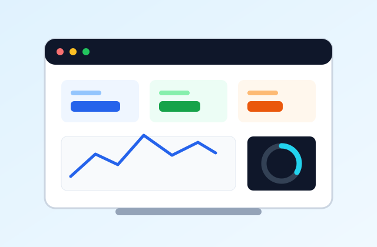

Praktikum terarah
Modul dan pendampingan untuk memahami sensor, aktuator, mikrokontroler, serta dasar sistem tertanam.
IoT Laboratory Management System
Laboratorium Internet of Things untuk praktikum, riset, pengembangan prototipe, dan kolaborasi lintas disiplin.

Ringkasan
Data ringkas perangkat, kegiatan, dan anggota yang dikelola melalui ILMS.

Tentang ILMS
ILMS menghubungkan kebutuhan pembelajaran dengan pengelolaan laboratorium yang rapi. Mulai dari pencatatan inventori, penjadwalan kegiatan, sampai dokumentasi hasil karya.
Fokus kami
Tiga pilar utama yang menghubungkan laboratorium dengan kebutuhan mahasiswa dan mitra.
Modul dan pendampingan untuk memahami sensor, aktuator, mikrokontroler, serta dasar sistem tertanam.
Ruang untuk menguji ide, merakit perangkat, dan mengembangkan solusi IoT yang relevan.
Pertemuan lintas divisi, berbagi pengetahuan, dan dokumentasi proyek secara berkelanjutan.
Divisi
Setiap divisi memiliki fokus alat, materi, dan kegiatan yang saling melengkapi.
Mikrokontroler, pemrograman perangkat, dan integrasi komponen elektronik.
Pengukuran lingkungan, kontrol perangkat, serta kalibrasi sensor.
Konektivitas perangkat, protokol komunikasi, dan pertukaran data.
Visualisasi data, dasbor pemantauan, dan pengelolaan informasi perangkat.
Media
Video singkat ini memperlihatkan fokus laboratorium: belajar, membangun, dan berkolaborasi. Putar audio sambutan untuk mengenal ILMS lebih dekat.
Audio sambutan
Durasi 5 detik. Gunakan tombol putar pada pemutar audio.
Sorotan

Latihan merakit dan memeriksa sambungan papan sirkuit.

Pengujian sensor, logika kendali, dan performa robot.

Membaca data sensor dan menampilkannya pada dasbor.
Hubungi pengelola untuk informasi praktikum, peminjaman alat, dan kolaborasi.